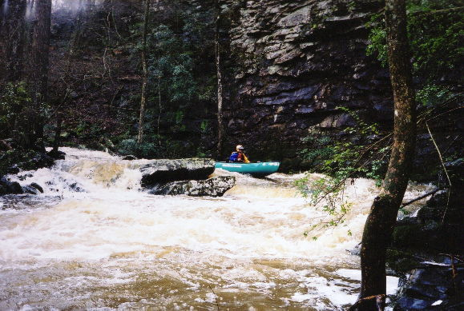
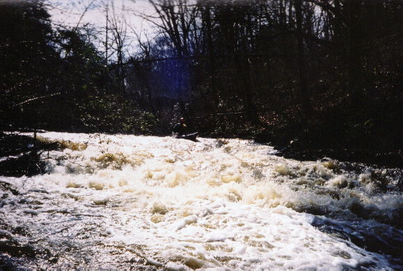
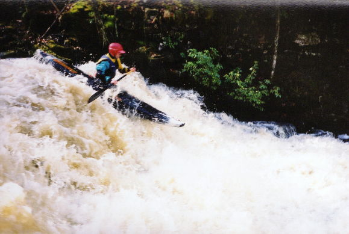
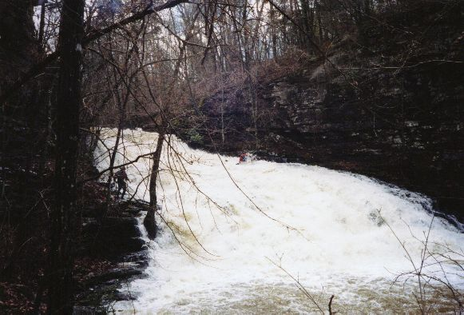
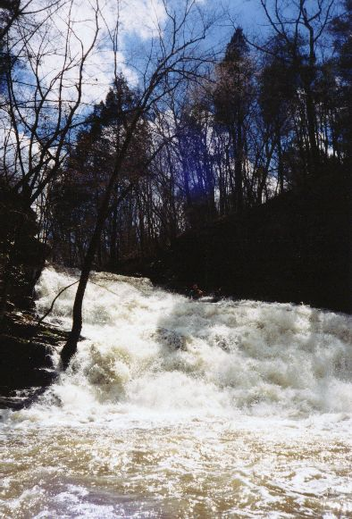
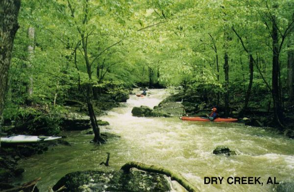

Dry (Short) Creek
|
Barry Hart on the opening slide. This was a low water run in April 1998. |
|
K. C. Kyle waits for Jim Pockstaller in a typical rapid above the big slide. |
|  | Bill McKinley on the last distinct rapid above the big slide. |
|  | The first part of the big slide, aka Dry Creek Falls. Which leads into... |
|  | ...the steepest part of the drop, and finally... |
|  | The last section. This is Fred Westrom on the first known run of Dry Creek Falls, March 15, 2001 |
|  | Yours truly a few minutes later. Unfortunately in the shadows. |
 |
Barry on a twisting slide just above the undercut IV/V rapid |
 |
The undercut IV/V rapid as seen from above. The water goes over a 6' drop, then some of it heads right under a log then into the rock on the bottom right which is undercut. If you go too far left at the bottom, which many do, you will tango with the bottom left rock, which is also undercut, though not as badly as the right one. |
 |
Barry runs a rapid I call Pyramid Rock |
|  | A really nice shot of Barry Hart in some unnamed rapid on Dry. A spring low water run. |